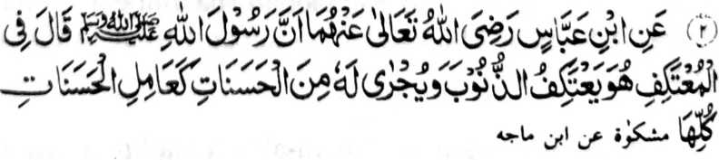

Hadith 2

Miyakathitayan ko Ibn ‘Abbas (Radhiallaho Anho) a mata-an a so Rasulollah (Sallallaho ‘A laihi Wasallam) na miyatharo iyan: "So tao a magi-I'tikaf na makalilidas ko manga dosa go ipembalas rekaniyan so mapiya sa lagid o imbalas ko langon o minggalebek sa manga pipiya.”
(Tanodan a so tomatareg sa Masjid [ma-ana magi-I'tikaf na di ron khapakay so kaliyo sabap ko manga galebek sa donya. Aya bo a kaphakaliyo niyan na pantag ko panenekat o wara-an ibarat o kasong sa ig di na dezel, go so kapagabedas go so kaphaigo o di na kasong ko pezambayangan sa Jumu’ah igira kena ba thindegen sangkoto a kakadenan niyan a Masjid, na oriyan noto na paliyogat rekaniyan so kakasoy niyan bo).
OSAYAN
Imanto na giyangka-iya Hadith na minitoro iyan so dowa mala a pahala o I’tikaf.
Paganay ron, na phakalidas so tao ko dosa. Giyangka-iya a donya a kapapadaleman reketano na mapepeno a manga bodiyok na aya den a kalilid na pekhadosa so tao apiya di niyan mapipikir o oba pendosa. So kapakasogok sa dosa ko soled o babarakaten a olan-olan a Ramadhan na tanto a mala a kabinasa-an o manga ginawa tano. Misabap ko katatap tano sa kasisibay tano sa Masjid, na tarotop a kiyalidasan so manga bodiyok sa kandosa.
Ika dowa, na marayag a igira somisibay so tao sa Masjid, na lagid o ba malelepas sekaniyan ko kinggolalanen ko manga ped a simba lagid o kapakaped ko kasambayang sa Janaazah, go so kadolog sa Qobor, go so kabentel sa pekhasakit, go so manga lagid iyan. Sabap ro-o, na pitharo angka-iya Hadith, a mbalasan so tao sa lagid angka-iya miyanga-aloy apiya da sekaniyan non makaped nggolalan. Tanto a mala a kamapiya-an a pho-on ko Allah (Subhaanaho Wa Ta’ala)! Tanto a mala a gagao o Allah (Subhaanaho Wa Ta’ala)! Opama ka zabota tano ago titho a katago-an tano sa babaya sangka-iya manga limo, a phakagamit ko Limo o Allah (Subhaanaho Wa Ta’ala), ogaid na tanto tano a mindadarainon siran ago tanto a maito a aarega-an tano ko Agama tano.